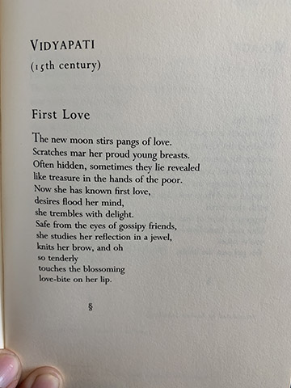
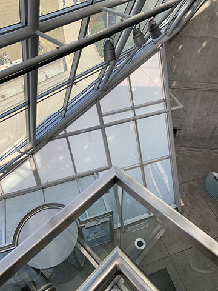
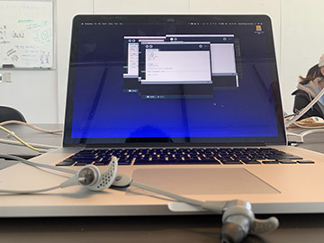

×
6:00 AM
Here is a constant debate of whether to get up or sleep for another 15 minutes and then get up.
×
7:00 AM
At this point I have decided to get up and be a functioning member of society I just need my body to know
that.
×

8:00 AM
I am on my way to class this is the bliss before I realized that I had forgotten my hard drive. Which for
Tuesdays for me is super important because today I tend to stare at my screen for more than twelve or
fourteen hours a day, all while soley writing code. Either for Dae In Chung creating interactive things for
Gen Type or for you, Angelique, creating this timeline while my brain melts out of my ear.
×
9:00 AM
I never stop working. Which might be why I am always tired but none the less I tend to work on multiple
different things in a short amount of time. Not that I am saying that I am a multi-tasker. but from what I
have seen of my own proccess is that I tend to work better in a constant change in work. So for me I find
that it is easiest to work on something for an hour and then take a break by working on another project for
an hour and just rotating through all of the work I have on my plate. At this moment I am working on the
final for my writing class "Playing With Words", for which I am working on a book of love poetry about my
past my prestn and future.
×

10:00 AM
Here I am just looking for ideas on how to sturcture some of my poetry for my zine. Which leads me into two
different finals in two different classes. But both are gonna take a lot of work to acomplish in the time
frame of just one month.
×

11:00 AM
Now I am back at it tking notes in Gen Type. Someone told me this is the most difficult class that the
Graphic Design Department has to offer? I have no idea. Someone wanna answer to the contrary? I mean either
way I really enjoy this class even though it does hand me my behind mentally and physically. Luckily
Angelique is super chill so it this class is a good way to end the day.
×

12:00 PM
Now I need sustinence. I have this really bad habit of not eating breakfast. What is that about? I mean I
chalk it up to just being an artist. I need to fix that I really need to work on what my morning routine
looks like. Right now it is in no way shape or form healthy or sustainable. HELP!!
×

1:00 PM
Even more Gen Type notes... I mean really Dae In is one of the nicest people I have ever met. If you get the
chance take a class with him. I have nothing but good things to say about him. And I am not just saying that
because this getting displayed for critique.
×
2:00 PM
Here we got another break where he allowed us to do what we need to. One of my other professors gave us this
packet of an article he wrote on John Cage, who was a experimental Musician in the mid-20th Century. Another
professor I highly recommend is Rod Smith. Great Guy! Super funny. I highly recommend "Playing with Words".
x
×

3:00 PM
After Dae In I went over to station to go and pick up my weaving off of my loom so I could begin to put
another warp and begin to learn how to weave double cloth... When you see this you will be blown away. It is
amazing.
×

4:00 PM
And so it begins...
×

5:00 PM
CodePen shutdown for a while which was very interesting though it didn't really put a huge stop on everything
we were doing which was good.
×

6:00 PM
Time for Dinner!!!!!!! Finally!
×

7:00 PM
Bathroom Mirror Selfie!! Still crunching away on this Timeline. My Brain Hurts.
×

8:00 PM
At this point in the day I am ready to go home and not talk to anyone else for the rest of the day. Goodbye.